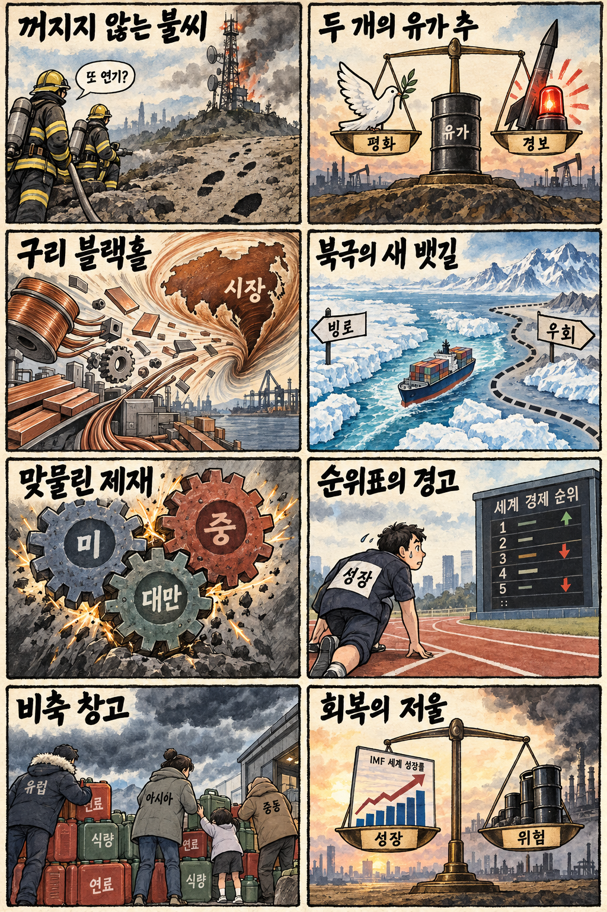
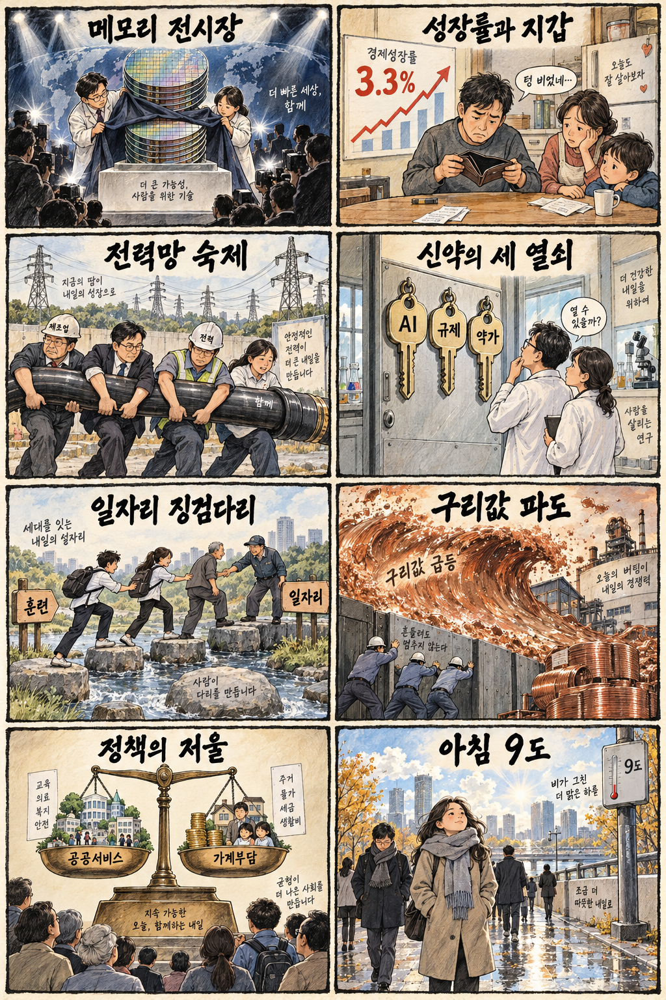

01
마벨 · 253.79→268.73달러 · +5.88%
내용요약 시가 대비 +5.88%로 조사 종목 중 가장 강한 흐름을 보였습니다.
예상여파 인공지능 네트워크·맞춤형 반도체 기대는 국내 부품 심리에 우호적이지만 급등 추격은 경계해야 합니다.
MORNING_BRIEFING_20261014
작성 시각: 2026-10-14 06:38 KST · 직전 미국 정규장과 2026-10-14 KST 당일 공개 기사 기준
직전 미국 정규장인 10월 13일 뉴욕증시는 다우 -0.35%, S&P 500 -0.02%, 나스닥 -0.15%로 동반 약세였습니다. 지수 하락폭은 제한적이었지만 반도체 장비와 금융·산업재가 약했고, 일부 인공지능 반도체는 반등했습니다. KOSPI가 이틀 연속 급락한 뒤인 만큼 오늘 한국 증시는 지수 반등 자체보다 외국인 매도 둔화, 원·달러 환율과 6,000선 지지 여부를 먼저 봐야 합니다.
| 지수 | 종가 | 등락률 | 한국 증시 시사점 |
|---|---|---|---|
| 다우존스 | 51,670.10 | -0.35% | 경기민감주 방어력은 우호적이나 고유가와 금리 부담을 함께 점검 |
| S&P 500 | 7,805.45 | -0.02% | 경기민감주 방어력은 우호적이나 고유가와 금리 부담을 함께 점검 |
| 나스닥 종합 | 27,204.38 | -0.15% | 반도체 약세와 성장주 조정은 국내 기술주 심리에 부담 |
다우 -0.35%, S&P 500 -0.02%, 나스닥 -0.15%로 마감했습니다.
전일 -5.46% 급락해 지수보다 수급 안정 확인이 우선입니다.
AMD·마벨·오라클은 강했지만 반도체 장비는 약했습니다.
IMF 상향에도 고유가와 내수 체감경기 격차는 남았습니다.
10월 13일 보고서는 국내 급락과 미국 반도체 약세 속에서 수급·컨센서스·보정 표본 문턱을 모두 충족한 종목이 없어 공식 추천을 내지 않았습니다. 게시 당시 판단을 유지하며 사후 종목을 추가하지 않습니다.
| 시장 | 종가 | 등락률 | 기준 |
|---|---|---|---|
| KOSPI | 6,035.35 | -5.46% | 10월 13일 · 시가 대비 -2.44% |
| KOSDAQ | 837.03 | -1.43% | 10월 13일 · 시가 대비 +1.62% |
| 다우존스 | 51,670.10 | -0.35% | 미국 10월 12일 정규장 |
| S&P 500 | 7,805.45 | -0.02% | 미국 10월 12일 정규장 |
| 나스닥 종합 | 27,204.38 | -0.15% | 미국 10월 12일 정규장 |
마벨 +5.88%, AMD +4.85%, 인텔 +3.29%로 차별화됐습니다.
오라클 +5.36%, 메타 +3.59%로 상대 강세였습니다.
어플라이드 머티리얼즈가 시가 대비 -4.36% 밀렸습니다.
JP모건 -2.51%, 캐터필러 -2.30%로 하락했습니다.
내용요약 시가 대비 +5.88%로 조사 종목 중 가장 강한 흐름을 보였습니다.
예상여파 인공지능 네트워크·맞춤형 반도체 기대는 국내 부품 심리에 우호적이지만 급등 추격은 경계해야 합니다.
내용요약 시가 대비 +5.36%로 클라우드·데이터베이스 대형주가 반등했습니다.
예상여파 인공지능 인프라 수요 기대를 지지하지만 투자 확대가 현금흐름과 수익성으로 연결되는지 봐야 합니다.
내용요약 시가 대비 +4.85%로 가속기 경쟁 기대가 반영됐습니다.
예상여파 국내 HBM 공급망 심리에 긍정적일 수 있으나 고객 인증과 실제 출하가 확인돼야 합니다.
내용요약 시가 대비 -4.36%로 반도체 장비주가 약세였습니다.
예상여파 장비 투자 사이클의 변동성이 커져 국내 소부장 종목의 밸류에이션 부담을 자극할 수 있습니다.
내용요약 시가 대비 -2.51%로 대형 금융주가 하락했습니다.
예상여파 금리·경기 기대 변화가 금융주와 경기민감주 전반의 위험선호를 낮출 수 있습니다.
미국 지수는 소폭 하락했지만 AMD·마벨·오라클의 강세는 국내 HBM·인공지능 인프라 심리에 제한적 완충 역할을 할 수 있습니다. 다만 KOSPI가 전일 -5.46%로 이틀째 급락했고 미국 반도체 장비가 약했으므로 기술적 반등을 추세 전환으로 단정하면 안 됩니다. 원·달러 환율, 외국인 현·선물 수급과 6,000선 방어를 먼저 확인해야 합니다.
오늘은 추천 없음 — 현금 관망
KOSPI가 전일 -5.46% 추가 급락해 변동성 안정 여부가 검증되지 않았습니다. 전일까지의 외국인·기관 수급, 컨센서스 변화와 30건 이상 보정 표본을 모두 확보해 종합점수 75점·상승확률 60%·예상 손익비 1.5를 동시에 통과한 종목이 없어 공식 후보를 제시하지 않습니다.
관심 연결종목 AI 메모리·데이터센터 전력·바이오 정책 관련주는 관찰 대상일 뿐 매수 추천이 아닙니다. 장전 갭 상승과 급반등을 추격매수하지 않습니다.
전일 저점과 외국인 현·선물 매도 둔화 여부를 확인합니다.
중동 위험과 외국인 투매 뒤 1,340원대 움직임을 봅니다.
미국 가속기 반등이 국내 대형주 수급으로 이어지는지 점검합니다.
급격한 기온 하락과 큰 일교차에 대비합니다.
핵심 요약: 마이크로소프트의 마이아 300과 AMD의 고밀도 서버 공개로 인공지능 경쟁이 칩에서 랙·소프트웨어까지 넓어졌습니다. 한국 메모리 업계는 HBM 이후 추론 메모리의 고객 인증과 양산 경쟁에 들어갔고, 안전 거버넌스도 핵심 의제로 부상했습니다.
내용요약 마이크로소프트가 차세대 자체 인공지능 반도체 마이아 300을 공개했다는 당일 보도입니다. 범용 그래픽처리장치 의존을 낮추려는 빅테크의 수직계열화 경쟁이 이어집니다.
예상여파 커스텀 가속기와 전용 소프트웨어 생태계가 확대되며 HBM·패키징·전력 효율 경쟁도 함께 치열해질 수 있습니다.
내용요약 삼성전자가 HBM을 넘어 인공지능 추론에 최적화한 메모리 분야에서 AMD·엔비디아와 협력을 확대한다는 보도입니다.
예상여파 학습 중심 수요가 추론으로 확산되면 대역폭뿐 아니라 용량·전력효율·고객 인증이 메모리 공급망의 새 기준이 될 수 있습니다.
내용요약 AMD가 인공지능 에이전트 수요를 겨냥한 차세대 고밀도 서버를 공개했다는 당일 보도입니다.
예상여파 가속기 경쟁이 칩 단품에서 랙 단위 전력·냉각·네트워크 최적화로 넓어져 데이터센터 설비 투자에 영향을 줄 수 있습니다.
내용요약 삼성전자와 SK하이닉스가 반도체대전에서 차세대 인공지능 메모리 기술을 선보인다는 보도입니다.
예상여파 중국 추격과 범용 D램 가격 둔화 속에서 제품 로드맵이 실제 양산 수율과 고객 매출로 이어지는지가 관건입니다.
내용요약 오픈AI와 앤트로픽 관계자들이 향후 6~12개월 인공지능 안전 위험에 대비해야 한다고 경고했다는 보도입니다.
예상여파 모델 성능 경쟁과 함께 안전성 평가, 접근 통제와 기업 거버넌스 투자가 더 빠르게 제도화될 수 있습니다.
핵심 요약: 유럽 기반시설 보안과 중동 긴장이 지정학 위험을 높이는 가운데 러시아산 경유 공급 기대가 유가를 붙잡았습니다. 구리 물량 이동과 북극항로 경제성, 미·중·대만 제재 공방은 공급망의 새 변수가 되고 있습니다.
내용요약 폴란드 당국이 통신 시설 방화 용의자를 붙잡고 러시아 배후를 지목했다는 당일 보도입니다.
예상여파 유럽 핵심 기반시설의 물리·사이버 보안 강화와 대러 긴장이 동시에 높아질 수 있습니다.
내용요약 러시아산 경유 공급 확대 기대와 중동 긴장이 맞서 국제유가가 혼조로 마감했다는 당일 보도입니다.
예상여파 공급 완화 기대에도 지정학 위험 프리미엄이 남아 운송비·물가와 통화정책 전망의 변동성이 이어질 수 있습니다.
내용요약 미국으로 차익 거래 물량이 몰리며 구리 공급이 빨려 들어가 한국 제조업에도 부담이 될 수 있다는 보도입니다.
예상여파 전선·전력기기·배터리 등 구리 사용 업종은 원가와 재고 확보 부담이 커질 수 있습니다.
내용요약 북극항로의 운항 가능성이 커졌지만 경제성과 안전성 검증이 과제로 남았다는 당일 보도입니다.
예상여파 항로 단축 기대와 별개로 쇄빙·보험·항만 인프라 비용이 사업성 판단의 핵심이 될 전망입니다.
내용요약 대만과 교류한 인사 제재를 둘러싸고 중국·대만·미국이 연쇄 공방을 벌였다는 보도입니다.
예상여파 기술·통상 현안과 안보 갈등이 결합되며 동아시아 공급망의 정책 위험이 높아질 수 있습니다.

핵심 요약: 인공지능 메모리 기술 경쟁과 IMF의 성장률 3.3% 상향은 수출 회복 기대를 높였습니다. 그러나 전력망 비용, 바이오 제도, 청년 고용의 지속성과 급격한 기온 변화처럼 체감경제와 실행 단계의 과제는 남아 있습니다.
내용요약 삼성전자와 SK하이닉스가 인공지능 메모리 신기술을 선보이며 미국·중국 추격에 대응한다는 보도입니다.
예상여파 기술 공개가 HBM·추론 메모리의 고객 인증과 안정적 양산으로 이어지는지 확인해야 합니다.
내용요약 IMF가 반도체 수출 호조를 반영해 한국 성장률 전망을 2.6%에서 3.3%로 높였다는 당일 보도입니다.
예상여파 수출 주도 성장의 개선은 긍정적이지만 고유가와 내수 체감경기 사이의 격차가 정책 과제로 남습니다.
내용요약 한국이 바이오 5대 강국으로 도약하려면 인공지능·규제·약가 정책이 함께 맞물려야 한다는 산업계 진단입니다.
예상여파 신약 개발 속도뿐 아니라 임상·허가·보상 체계의 예측 가능성이 투자 유치와 사업화 성과를 좌우할 수 있습니다.
내용요약 정부가 최근 3년 청년 일자리 예산 집행과 고용 유지 성과에 대한 보도 내용을 설명한 정책자료입니다.
예상여파 단기 취업 알선을 넘어 고용 지속성과 직무 전환 성과를 투명하게 측정하는 일이 중요합니다.
내용요약 가을비가 그친 뒤 서울 출근길 기온이 9도까지 내려가고 일교차가 커진다는 당일 예보입니다.
예상여파 출근길 체온 관리와 강풍 대비가 필요하며 야외 작업·농작물 관리에도 유의해야 합니다.
